First Domino is a cross-ideological movement with one objective: European federation. Not as an abstract ideal, but as a political reality we intend to help build. We are not a party. We are not an institution. We are the opening move, the first domino that sets the rest in motion.
We begin by doing what movements do best: growing, spreading ideas, and making the case for a united Europe so compelling that it becomes impossible to ignore. Through coordinated social media campaigns, strategic partnerships, and content that cuts across the political spectrum, we shape the narrative from the ground up.
However, this is only the starting point, the bigger the movement, the further our reach: from online presence to real political weight, until federation is no longer a question. Every ideology is welcome here. Every contribution matters. The only requirement is belief in one idea: that Europe's future is federal.
A cross-ideological founding document, drafted together by socialists, greens, social democrats, liberals, and conservatives.